정보처리기사(구) (2011-06-12 기출문제)
1과목: 데이터 베이스
1. 데이터베이스의 특성으로 옳지 않은 것은?
- 실시간 접근성
- 동시 공용
- 계속적인 변화
- 주소에 의한 참조
(정답률: 84%)

2. 순서가 A, B, C, D 로 정해진 입력 자료를 스택에 입력하였다가 출력한 결과로 가능한 것이 아닌 것은?
- D, C, B, A
- B, C, D, A
- C, B, A, D
- D, B, C, A
(정답률: 71%)
3. Which of the following is not a function of the DBA?
- schema definition
- storage structure definition
- application program coding
- integrity constraint specification
(정답률: 71%)
4. 데이터베이스 설계 순서로 옳은 것은?
- 요구조건분석→개념적설계→논리적설계→물리적설계→구현
- 요구조건분석→논리적설계→개념적설계→물리적설계→구현
- 요구조건분석→논리적설계→물리적설계→개념적설계→구현
- 요구조건분석→개념적설계→물리적설계→논리적설계→구현
(정답률: 84%)
5. Which of the following does not belong to the DML statement of SQL?
- DELETE
- ALTER
- SELECT
- UPDATE
(정답률: 78%)
6. 릴레이션 R1에 저장된 튜플이 릴레이션 R2에 있는 튜플을 참조하려면 참조되는 튜플이 반드시 R2에 존재해야 한다는 무결성 규칙은?
- 개체 무결성 규칙(Entity Integrity Rule)
- 참조 무결성 규칙(Referential Integrity Rule)
- 영역 무결성 규칙(Domain Integrity Rule)
- 트리거 규칙(Trigger Rule)
(정답률: 82%)
7. 시스템카탈로그에 대한 설명으로 옳지 않은 것은?
- 시스템 카탈로그는 DBMS가 스스로 생성하고 유지하는 데이터베이스 내의 특별한 테이블들의 집합체이다.
- 일반사용자도 시스템카탈로그의 내용을 검색할 수 있다.
- 시스템카탈로그 내의 각 테이블은 DBMS에서 지원하는 개체들에 관한 정보를 포함한다.
- 시스템카탈로그에 대한 갱신은 데이터베이스의 무결성 유지를 위하여 사용자가 직접 갱신해야 한다.
(정답률: 81%)
8. 관계대수에 대한 설명으로 옳은 내용 모두를 나열한 것은?
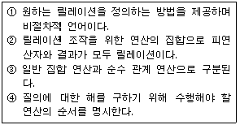
- ②, ③, ④
- ①, ③, ④
- ①, ②, ④
- ①, ②, ③, ④
(정답률: 64%)
9. 로킹(locking)단위에 대한 설명으로 옳지 않은 것은?
- 로킹의 대상이 되는 객체의 크기를 의미한다.
- 로킹의 단위가 커지면 병행성 수준이 낮아진다.
- 로킹의 단위가 작아지면 로킹 오버헤드가 감소한다.
- 데이터베이스도 로킹의 단위가 될 수 있다.
(정답률: 76%)
10. DBMS의 필수기능 중 정의기능에 해당하는 것은?
- 데이터베이스를 접근하는 갱신, 삽입, 삭제 작업이 정확하게 수행되게 해야 한다.
- 정당한 사용자가 허가된 데이터만 접근할 수 있도록 보안을 유지하여야 한다.
- 여러 사용자가 데이터베이스를 동시에 접근하여 처리할 때 데이터베이스와 처리 결과가 항상 정확성을 유지하도록 병행 제어를 할 수 있어야 한다.
- 데이터와 데이터의 관계를 명확하게 명세할 수 있어야 하며, 원하는 데이터 연산은 무엇이든 명세할 수 있어야 한다.
(정답률: 68%)
11. 다음 자료에 대하여 “selection sort"를 사용하여 오름차순으로 정렬할 경우 PASS1의 결과는?
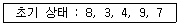
- 3, 4, 8, 7, 9
- 3, 4, 7, 9, 8
- 3, 4, 7, 8, 9
- 3, 8, 4, 9, 7
(정답률: 79%)
12. 뷰(VIEW)에 대한 설명 중 옳지 않은 내용으로만 나열된 것은?
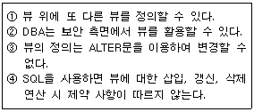
- ③
- ②, ③, ④
- ④
- ①, ④
(정답률: 58%)
13. 3NF에서 BCNF가 되기 위한 조건은?
- 이행적 함수 종속 제거
- 부분적 함수 종속 제거
- 다치 종속 제거
- 결정자이면서 후보 키가 아닌 것 제거
(정답률: 75%)
14. 개체-관계 모델 (E-R Model)에 관한 설명으로 옳지 않은 것은?
- E-R모델의 기본적인 아이디어를 시각적으로 가장 잘 나타내는 것이 E-R다이어그램이다.
- E-R다이어그램에서 개체 타입은 다이아몬드, 관계 타입은 사각형, 속성은 타원으로 표시한다.
- 개체, 속성, 그들 간의 관계를 이용하여 개념 세계의 정보 구조를 표현한다.
- 1976년 P. chen이 제안하였다.
(정답률: 78%)
15. 데이터베이스 설계 단계 중 물리적 설계의 옵션 선택 시 고려 사항으로 거리가 먼 것은?
- 스키마의 평가 및 정제
- 응답 시간
- 저장 공간의 효율화
- 트랜잭션 처리도
(정답률: 72%)
16. 릴레이션의 특징으로 옳은 내용 모두를 나열한 것은?
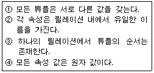
- ①, ③
- ①, ②, ④
- ②, ③, ④
- ①, ②, ③, ④
(정답률: 79%)
17. 트랜잭션(Transaction)은 보통 일련의 연산 집합이란 의미로 사용하며 하나의 논리적 기능을 수행하는 작업의 단위이다. 트랜잭션이 가져야 할 특성으로 거리가 먼 것은?
- Atomicity
- Concurrency
- Isolation
- Durability
(정답률: 68%)
18. 다음 트리에 대한 INORDER 운행 결과는?
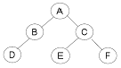
- A B D C E F
- D B A E C F
- D B E C F A
- A B C D E F
(정답률: 63%)
19. 스택 알고리즘에서 T가 스택 포인터이고, m이 스택의 길이일 때, 서브루틴 “AA"가 처리해야 하는 것은?
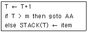
- 오버플로우 처리
- 언더플로우 처리
- 삭제 처리
- 삽입 처리
(정답률: 73%)
20. 데이터 모델의 구성 요소 중 데이터베이스에 표현될 대상으로서의 개체 타입과 개체 타입들 간의 관계를 기술한 것을 의미하는 것은?
- Domain
- Structure
- Constraint
- Operation
(정답률: 61%)
2과목: 전자 계산기 구조
21. 다음과 같은 값을 가지는 시스템에서 2계층 캐시 메모리를 사용할 경우는 그렇지 않은 경우에 비해 평균 메모리 액세스 시간이 약 몇 배 향상되는가?
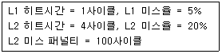
- 0.7
- 1.4
- 2.7
- 5.5
(정답률: 44%)
22. 다음 중 IEEE 754에 대한 설명으로 옳은 것은?
- 고정소수점 표현에 대한 국제 표준이다.
- 가수는 부호 비트와 함께 부호화-크기로 표현된다.
- 0.M x 2^E의 형태를 취한다. (단, M:가수, E:지수)
- 64비트 복수-정밀도 형식의 경우 지수는 10비트 이다.
(정답률: 40%)
23. 하드웨어 신호에 의하여 특정 번지의 서브루틴을 수행하는 것은?
- handshaking mode
- vectored interrupt
- DMA
- subroutine call
(정답률: 59%)
24. 디코더(Decoder)로 전가산기 회로를 설계하고자 한다. 설계에 필요한 IC는?
- 2×4 디코더:1개, 4입력 OR 게이트:2개
- 2×4 디코더:1개, 2입력 OR 게이트:2개
- 3×8 디코더:1개, 2입력 OR 게이트:2개
- 3×8 디코더:1개, 4입력 OR 게이트:2개
(정답률: 34%)
25. 4비트로 자료를 표시할 때 2진화 16진수는 이진화십진수(BCD)에 비해 몇 개를 더 표시할 수 있는가?
- 0
- 2
- 4
- 6
(정답률: 43%)
26. flynn의 분류법 중 여러 개의 처리기에서 수행되는 인스트럭션(instruction)들은 각기 다르나 전체적으로 하나의 데이터 스트림을 가지는 형태는?
- SISD
- SIMD
- MISD
- MIMD
(정답률: 64%)
27. 컴퓨터의 제어 장치에 일반적으로 포함되지 않는 것은?
- 해독기
- 순서기
- 주기억장치
- 주소 처리기
(정답률: 49%)
28. 32비트의 가상 주소, 4KB 페이지, 페이지 테이블 엔트리당 4바이트로 된 페이지 테이블에 대해 전체 페이지 테이블의 크기는 얼마인가?
- 4MB
- 8MB
- 16MB
- 32MB
(정답률: 26%)
29. 다음 중 1-주소 명령어 형식을 따르는 명령어 MULA를 가장 적절하게 설명한 것은? (단, M[A]는 기억장치와 A번지의 내용을 의미하고 MUL은 곱셈을 나타낸다.)
- AC←AC× M[A]
- R1←R2×M[A]
- AC←M[A]
- M[A]←AC
(정답률: 53%)
30. 메모리 인터리빙(interleaving)의 설명이 아닌 것은?
- 단위 시간에 여러 메모리의 접근이 불가능하도록 하는 방법이다.
- 캐시 기억장치, 고속 DMA 전송 등에서 많이 사용된다.
- 기억장치의 접근시간을 효율적으로 높일 수 있다.
- 각 모듈을 번갈아 가면서 접근(access)할 수 있다.
(정답률: 63%)
31. 입력이 A, B, C인 다음 논리식을 입력이 2개인 NAND게이트만으로 회로를 구성할 경우, 최소 몇 개의 NAND게이트가 필요한가?
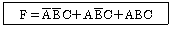
- 6
- 5
- 4
- 3
(정답률: 37%)
32. 인터럽트 작동 순서가 올바른 것은?
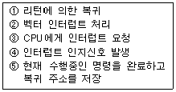
- ③⑤④②①
- ④③⑤②①
- ⑤②③①④
- ①③④⑤②
(정답률: 41%)
33. 서로 다른 17개의 정보가 있다. 이 중에서 하나를 선택하려면 최소 몇 개의 비트가 필요한가?
- 3
- 4
- 5
- 17
(정답률: 67%)
34. 주기억장치로부터 캐시 메모리로 데이터를 전송하는 매핑 프로세스 방법이 아닌 것은?
- associative mapping
- direct mapping
- set-associative mapping
- virtual mapping
(정답률: 57%)
35. 컴퓨터에서 명령어를 처리하기 위해서 명령어를 CPU에 옮긴 후 명령 레지스터(IR)에 셋(set)시켜 해독하는 단계는?
- Fetch Cycle
- Indirect Cycle
- Execute Cycle
- Interrupt Cycle
(정답률: 56%)
36. CPU가 어떤 명령과 다음 명령을 수행하는 사이를 이용하여 하나의 데이터 워드를 직접 전송하는 DMA방식을 무엇이라고 하는가?
- word stealing
- word transfer
- cycle stealing
- cycle transfer
(정답률: 60%)
37. 입출력 인터페이스를 사용해야 하는 이유로 틀린 것은?
- 속도의 차이
- 마이크로 오퍼레이션의 차이
- 전압레벨의 차이
- 전송사이클 길이의 차이
(정답률: 29%)
38. 입출력 제어방식에 대한 설명으로 가장 거리가 먼것은?
- 프로세서에 의한 입출력 제어 방식으로 크게 동기제어 방식과 비동기 제어방식으로 구분할 수 있다.
- 인터럽트 제어방식은 프로세서에 의한 제어방식으로 비동기 제어방식이다.
- 프로그램 제어방식은 전용장치 제어방식으로 동기방식과 플래그 검사 방식으로 구분할 수 있다.
- 전용장치에 의한 제어방식으로 DMA방식과 Channel 방식이 있다.
(정답률: 45%)
39. 어느 컴퓨터의 기억 용량이 1Mbyte이다. 이 때 필요한 주소선의 수는?
- 8개
- 16개
- 20개
- 24개
(정답률: 51%)
40. 모든 하드디스크 제조사들은 IDEMA를 통해 기존 512바이트 섹터 표준을 어떻게 변경하여야 하는가?
- 1K 섹터 표준으로 변경
- 4K 섹터 표준으로 변경
- 1M 섹터 표준으로 변경
- 4M 섹터 표준으로 변경
(정답률: 48%)
3과목: 운영체제
41. 페이지 교체기법 알고리즘 중 각 페이지마다 “Reference Bit"와 “Modified Bit"가 사용되는 것은?
- LRU
- NUR
- FIFO
- LFU
(정답률: 60%)
42. PCB(Process Control Block)가 갖고 있는 정보가 아닌 것은?
- 할당되지 않은 주변장치의 상태 정보
- 프로세스의 현재 상태
- 프로세스 고유 식별자
- 스케줄링 및 프로세스의 우선순위
(정답률: 64%)
43. HRN 방식으로 스케줄링 할 경우, 입력된 작업이 다음과 같을 때 우선순위가 가장 높은 것은?
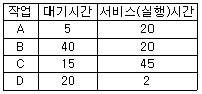
- A
- B
- C
- D
(정답률: 69%)
44. 분산 운영체제의 목적으로 거리가 먼 것은?
- 자원 공유
- 연산속도 향상
- 신뢰성 증대
- 보안성 향상
(정답률: 73%)
45. 스레드(Thread)에 대한 설명으로 거리가 먼 것은?
- 하나의 스레드는 상태를 줄인 경량 프로세스라고도 한다.
- 하나의 프로세스에는 하나의 스레드만 존재한다.
- 프로세스 내부에 포함되는 스레드는 공통적으로 접근 가능한 기억장치를 통해 효율적으로 통신한다.
- 스레드를 사용하면 하드웨어, 운영체제의 성능과 응용프로그램의 처리율을 향상시킬 수 있다.
(정답률: 76%)
46. UNIX 시스템에서 커널의 수행 기능에 해당하지 않는 것은?
- 프로세스 관리
- 기억장치 관리
- 입/출력 관리
- 명령어 해독
(정답률: 72%)
47. UNIX 파일시스템 구조에서 데이터가 저장된 블록의 시작 주소를 확인할 수 있는 블록은?
- 부트 블록
- I-node 블록
- 슈퍼 블록
- 데이터 블록
(정답률: 57%)
48. 3개의 페이지 프레임을 갖는 시스템에서 페이지 참조 순서가 1, 2, 1, 0, 4, 1, 3일 경우 FIFO 알고리즘에 의한 페이지 대치의 최종 결과는?
- 1, 2, 0
- 2, 4, 3
- 1, 4, 2
- 4, 1, 3
(정답률: 70%)
49. 프로세서의 상호 연결 구조 중 하이퍼 큐브 구조에서 각 CPU가 4개의 연결점을 가질 경우 CPU의 총 개수는?
- 4
- 16
- 32
- 65536
(정답률: 70%)
50. 레코드가 직접 액세스 기억장치의 물리적 주소를 통해 직접 액세스 되는 파일 구조는?
- Sequential File
- Indexed Sequential File
- Direct File
- Partitioned File
(정답률: 72%)
51. 파일 구성 방식 중 ISAM(Indexed Sequential Access- Method)의 물리적인 색인 구성은 디스크의 물리적 특성에 따라 색인(index)을 구성하는데, 다음 중 3단계 색인에 해당되지 않는 것은?
- 실린더 색인(cylinder index)
- 트랙 색인(track index)
- 마스터 색인(master index)
- 볼륨 색인(volume index)
(정답률: 62%)
52. 파일 시스템에 대한 설명으로 틀린 것은?
- 고급 언어에 대한 번역 기능을 제공한다.
- 사용자가 파일을 생성, 수정, 제거할 수 있도록 한다.
- 파일 공유를 위해서 여러 종류의 접근 제어 기법을 제공한다.
- 불의의 사태에 대비한 예비(backup)와 복구(recovery)능력을 갖추어야 한다.
(정답률: 68%)
53. 로더(Loader)의 종류 중 다음 설명에 해당하는 것은?
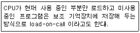
- 절대 로더(Absolute Loader)
- 재배치 로더(Relocating Loader)
- 동적 적재로더(Dynamic Loading Loader)
- 오버레이 로더(Overlay Loader)
(정답률: 67%)
54. 다중 처리기 운영체제 형태 중 주/종(Master/Slave) 처리기에 대한 설명으로 옳지 않은 것은?
- 주 프로세서가 운영체제를 수행한다.
- 주 프로세서와 종 프로세서가 모두 입·출력을 수행하기 때문에 대칭 구조를 갖는다.
- 주 프로세서가 고장이 나면 시스템 전체가 다운된다.
- 하나의 프로세서를 주 프로세서로 지정하고, 다른 처리기들은 종 프로세서로 지정하는 구조이다.
(정답률: 74%)
55. UNIX 시스템의 특징으로 옳지 않은 것은?
- 대화식 운영체제이다.
- 소스가 공개된 개방형 시스템이다.
- 멀티유저, 멀티태스킹을 지원한다.
- 효과적으로 구현할 수 있는 이중 리스트 구조를 사용한다.
(정답률: 69%)
56. 현재 헤드 위치가 53에 있고 트랙 0번 방향으로 이동 중이다. 요청 대기 큐에는 다음과 같은 순서의 액세스 요청이 대기 중일 때 SSTF 스케줄링 알고리즘을 사용 한다면 헤드의 총 이동 거리는 얼마인가?
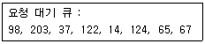
- 201
- 236
- 256
- 320
(정답률: 52%)
57. 운영체제의 목적으로 적절하지 않은 것은?
- 사용자의 편리한 환경 제공
- 처리능력 및 신뢰도 향상
- 컴퓨터 시스템의 성능 최적화
- 사용가능도 향상 및 응답시간 증가
(정답률: 77%)
58. 주기억장치 배치 전략 기법으로 최적 적합 방법을 사용한다고 할 때, 다음과 같은 기억장소 리스트에서 10K 크기의 작업은 어느 기억공간에 할당되는가? (단, 탐색은 위에서 아래로 한다.)
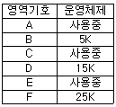
- B
- C
- D
- F
(정답률: 77%)
59. 운영체제의 운용 기법 종류 중 다음 설명에 해당하는 것은?
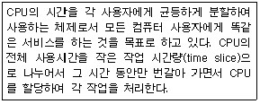
- Batch Processing System
- Multi Programming System
- Time Sharing System
- Real Time System
(정답률: 73%)
60. 페이징 기법에서 페이지 크기가 작아질수록 발생하는 현상으로 거리가 먼 것은?
- 기억장소 이용 효율이 증가한다.
- 입·출력 시간이 늘어난다.
- 내부 단편화가 감소한다.
- 페이지 맵 테이블의 크기가 감소한다.
(정답률: 50%)
4과목: 소프트웨어 공학
61. 소프트웨어 위기를 가져온 원인에 해당하지 않는 것은?
- 소프트웨어 규모 증대와 복잡도에 따른 개발 비용 증가
- 프로젝트 관리기술의 부재
- 소프트웨어 개발기술에 대한 훈련 부족
- 소프트웨어 수요의 감소
(정답률: 63%)
62. 캡슐화에 대한 설명으로 틀린 것은?
- 인터페이스가 단순화되고 객체 간의 결합도가 높아진다.
- 변경 작업시 부작용의 전파를 최소화한다.
- 캡슐화된 기능은 다른 클래스에서 재사용이 용이하다.
- 객체 안의 데이터와 연산들을 하나로 묶는 것을 의미한다.
(정답률: 64%)
63. 효과적인 프로젝트 관리를 위한 3P를 옳게 나열한 것은?
- People, Priority, Problem
- People, Problem, Process
- Problem, Process, Priority
- Power, Problem, Process
(정답률: 78%)
64. 소프트웨어 품질 목표 중 하나 이상의 하드웨어 환경에서 운용되기 위해 쉽게 수정될 수 있는 시스템 능력을 의미하는 것은?
- Reliability
- Correctness
- Portability
- Efficiency
(정답률: 54%)
65. 다음 중 가장 강한 결합도 상태는?
- data coupling
- stamp coupling
- common coupling
- control coupling
(정답률: 45%)
66. 바람직한 소프트웨어 설계 지침이 아닌 것은?
- 모듈 간의 결합도는 강할수록 바람직하다.
- 모듈 간의 접속관계를 분석하여 복잡도와 중복을 줄인다.
- 자료와 프로시저에 대한 분명하고 분리된 표현을 포함해야 한다.
- 설계는 소프트웨어 구조를 나타내어야 한다.
(정답률: 76%)
67. 람바우의 객체 지향 분석 모델링(modeling)에 해당 하지 않는 것은?
- relational modeling
- object modeling
- functional modeling
- dynamic modeling
(정답률: 55%)
68. 재공학(Reengineering) 활동으로 볼 수 없는 것은?
- Analysis
- Reverse Engineering
- Migration
- Reuse
(정답률: 55%)
69. 소프트웨어 형상관리의 대상으로 거리가 먼 것은?
- 소스 레벨과 수행 형태인 컴퓨터 프로그램
- 숙련자와 사용자를 목표로 한 컴퓨터 프로그램을 서술하는 문서
- 프로그램 내에 포함된 자료구조
- 시스템 개발 비용
(정답률: 64%)
70. 객체에게 어떤 행위를 하도록 지시하는 명령은?
- Class
- Instance
- Method
- Message
(정답률: 58%)
71. 소프트웨어의 특성이 아닌 것은?
- 물리적인 마모에 의하여 사용할 수 없게 된다.
- 유형의 매체에 저장되지만 개념적이고 무형적이다.
- 수학이나 물리학에서 볼 수 있는 규칙적이고 정형적인 구조가 없다.
- 요구나 환경의 변화에 따라 적절히 변형시킬 수 있다.
(정답률: 73%)
72. FTR의 지침 사항으로 거리가 먼 것은?
- 논쟁과 반박을 제한하지 않는다.
- 자원과 시간 일정을 할당한다.
- 문제 영역을 명확히 표현한다.
- 모든 검토자들을 위해 의미 있는 훈련을 행한다.
(정답률: 71%)
73. 소프트웨어의 재사용으로 인한 효과와 거리가 먼 것은?
- 시스템 구조와 구축방법의 교육적 효과
- 개발기간 및 비용 절약
- 개발시 작성된 문서의 공유
- 새로운 개발 방법 도입의 용이성
(정답률: 72%)
74. 소프트웨어 역공학(Software reverse engineering)에 대한 설명으로 옳지 않은 것은?
- 기존 소프트웨어의 구성 요소와 그 관계를 파악하여 설계도를 추출한다.
- 역공학의 가장 간단하고 오래된 형태는 재문서화라고 할 수 있다.
- 일반적인 개발 단계와는 반대 방향으로 기존 코드를 복구하는 방법이다.
- 대상 시스템 없이 새로운 시스템으로 개선하는 변경 작업이다.
(정답률: 72%)
75. 자료 사전(Data Dictionary)에서 자료의 반복을 나타내는 기호는?
- ( )
- { }
- [ ]
- * *
(정답률: 70%)
76. 블랙 박스 검사 기법에 해당하는 것으로만 짝지어진 것은?
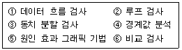
- ①, ②
- ①, ④, ⑤, ⑥
- ②, ④, ⑤, ⑥
- ③, ④, ⑤, ⑥
(정답률: 66%)
77. 유지보수의 종류 중 소프트웨어 검사 단계에서 밝혀지지 않은 모든 잠재적인 오류를 수정하기 위한 보수형태로서 오류의 진단과 수정이 포함되는 것은?
- Preventive maintenance
- Perfective maintenance
- Adaptive maintenance
- Corrective maintenance
(정답률: 48%)
78. 데이터 흐름도(DFD)의 구성요소에 포함되지 않는 것은?
- data flow
- data dictionary
- process
- data store
(정답률: 58%)
79. 소프트웨어 프로젝트 계획 수립시 소프트웨어 영역(범위) 결정의 주요 요소로 거리가 먼 것은?
- 기능
- 인적 자원
- 인터페이스
- 성능
(정답률: 58%)
80. 다음 검사 중 알파검사, 베타검사와 가장 관계가 있는 것은?
- Unit Test
- Integration Test
- System Test
- Validation Test
(정답률: 48%)
5과목: 데이터 통신
81. IETF에서 고안한 IPv4에서 IPv6로 전환(천이)하는데 사용되는 전략이 아닌 것은?
- Dual stack
- Tunneling
- Header translation
- Source routing
(정답률: 51%)
82. 무선 LAN, Wi-Fi(Wireless Fidelity)의 표준(규격) 제정을 담당하는 IEEE 워킹그룹은?
- IEEE 802.8
- IEEE 802.9
- IEEE 802.10
- IEEE 802.11
(정답률: 64%)
83. 인터넷 응용서비스 중 가상 터미널(Virtual Terminal) 기능을 갖는 것은?
- FTP
- Archie
- Gopher
- Telnet
(정답률: 60%)
84. HDLC의 프레임 중 링크의 설정과 해제, 오류 회복을 위해 주로 사용되는 것은?
- Information Frame
- Supervisory Frame
- Transport Frame
- Unnumbered Frame
(정답률: 41%)
85. 블루투스(Bluetooth)의 프로토콜 스택에서 물리계층을 규정하는 것은?
- RF
- L2CAP
- HID
- RFCOMM
(정답률: 52%)
86. TCP/IP에서 사용되는 논리주소를 물리주소로 변환시켜 주는 프로토콜은?
- TCP
- ARP
- RARP
- IP
(정답률: 60%)
87. 다음은 여러 가지 교환방식의 특징 중 “연결 설정”에 대해 나타내었다. [보기]에서 ( )안에 들어갈 알맞은 내용을 차례대로 나열한 것은?
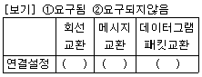
- ①,②,①
- ②,①,②
- ①,①,②
- ①,②,②
(정답률: 41%)
88. 전송할 데이터가 있는 채널만 차례로 시간 슬롯을 이용하여 데이터와 함께 주소정보를 헤더로 붙여 전송하는 다중화 방식은?
- 주파수 분할 다중화
- 역 다중화
- 예약 시분할 다중화
- 통계적 시분할 다중화
(정답률: 64%)
89. 가상회선 패킷교환에 대한 설명으로 옳지 않은 것은?
- 패킷이 전송되기 전에 논리적인 연결설정이 이루어져야 한다.
- 모든 패킷이 동일한 경로로 전달되므로 항상 보내어진 순서대로 도착이 보장된다.
- 링크 상에 설정된 하나의 가상회선 단위로 패킷의 손상 시 복구가 가능하다.
- 연결 설정 시에 경로가 미리 결정되기 때문에 각 노드에서 데이터 패킷의 처리 속도가 매우 느리다.
(정답률: 53%)
90. PPP(Point-to-Point Protocol)에 대한 설명으로 틀린 것은?
- 인터넷 접속에 사용되는 IETF의 표준 프로토콜이다.
- 오류 검출만 제공되며, 오류 복구와 흐름제어 기능은 제공되지 않는다.
- IP 패킷의 캡슐화를 제공한다.
- 동기식 점대점 링크에서만 사용할 수 있다.
(정답률: 43%)
91. HDLC를 기반으로 하며, ISDN의 D채널을 위한 링크 제어 프로토콜로 사용되는 것은?
- LAP-B
- LAP-M
- LAP-D
- LLC
(정답률: 53%)
92. ICMP(Internet Control Message Protocol)에 관한 설명으로 틀린 것은?
- IP 프로토콜에서는 오류 보고와 수정을 위한 메커니즘이 없기 때문에 이를 보완하기 위해 설계되었다.
- ICMP는 네트워크 계층 프로토콜이다.
- ICMP 메시지는 하위 계층으로 가기 전에 IP 프로토콜 데이터그램 내에 캡슐화 된다.
- ICMP 메시지는 4바이트의 헤더와 고정 길이의 데이터 영역으로 나뉜다.
(정답률: 49%)
93. RTCP(Real-Time Control Protocol)의 특징으로 옳지 않은 것은?
- Session의 모든 참여자에게 컨트롤 패킷을 주기적으로 전송한다.
- RTCP 패킷은 항상 16비트의 경계로 끝난다.
- 하위 프로토콜은 데이터 패킷과 컨트롤 패킷의 멀티플렉싱을 제공한다.
- 데이터 전송을 모니터링하고 최소한의 제어와 인증 기능을 제공한다.
(정답률: 53%)
94. IEEE 802.4의 표준안 내용으로 옳은 것은?
- 토큰 버스 LAN
- 토큰 링 LAN
- CSMA/CD LAN
- 무선 LAN
(정답률: 56%)
95. 일반적으로 동기식 시분할 다중화 방식에서 음성전화 채널 당 8bit씩 매 125㎲마다 할당한다면 데이터 전송률은?
- 32kbps
- 64kbps
- 1kbps
- 10kbps
(정답률: 44%)
96. X.25 프로토콜에 대한 설명으로 틀린 것은?
- ITU-T에서는 1976년 패킷 교환망을 위한 표준 프로토콜인 X.25 권고안을 처음으로 발간하였다.
- 패킷형 단말기를 패킷 교환망에 접속하기 위한 인터페이스 프로토콜이다.
- 물리 계층과 링크 계층, 패킷 계층이라는 3개의 계층으로 구성되어 있다.
- X.25에서는 가상회선을 가상 호와 반영구 가상회선의 두 가지로 나누어서 정의하며, 모든 패킷은 최소 1옥텟의 헤더를 가진다.
(정답률: 51%)
97. 다음이 설명하고 있는 전송기술은?
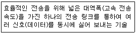
- 다중화
- 부호화
- 양자화
- 압축화
(정답률: 71%)
98. 채널용량(Channel Capacity)에 대한 설명으로 틀린 것은?
- 정해진 오류 발생률 내에서 채널을 통해 최대로 전송할 수 있는 정보의 양을 의미한다.
- 측정 단위는 초당 전송되는 비트수(bps)로 나타낸다.
- 샤논(Shannon)은 채널용량을 C = W log2(1 + S*N)으로 나타내었다.
- 채널을 통해서 보내지는 데이터의 양은 그 채널의 대역폭(Bandwidth )과 비례한다.
(정답률: 48%)
99. 다음 중 TCP 헤더에 포함되는 정보가 아닌 것은?
- 긴급 포인터
- 호스트 주소
- 순서 번호
- 체크섬
(정답률: 36%)
100. 동기전송 방식에서 주로 사용되는 오류검출 방식으로 프레임 단위로 오류검출을 위한 코드를 계산하여 프레임 끝에 FCS를 부착하는 것은?
- CRC
- Hamming Code
- Block Parity
- Parity Bit
(정답률: 53%)